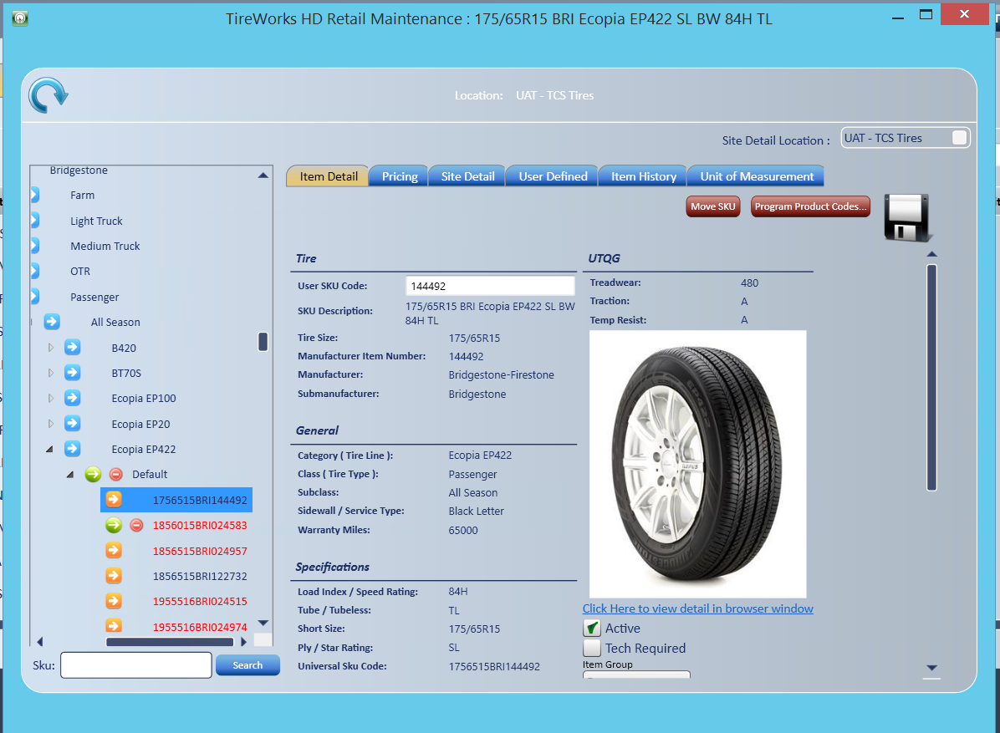
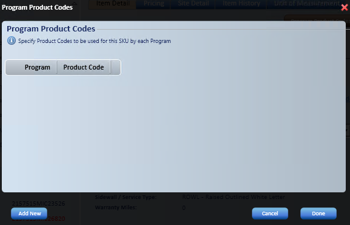
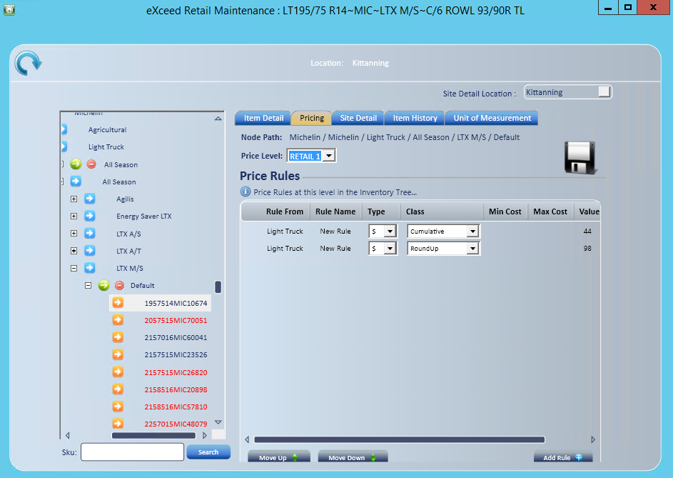
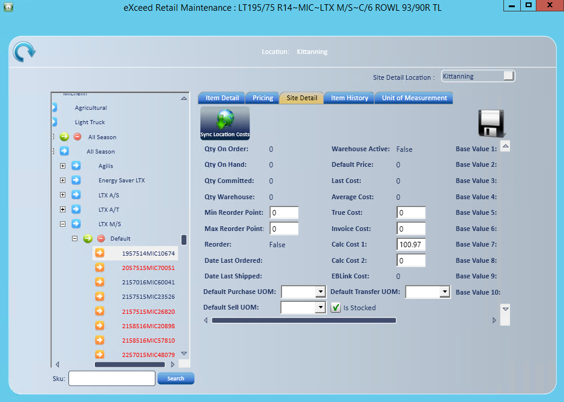
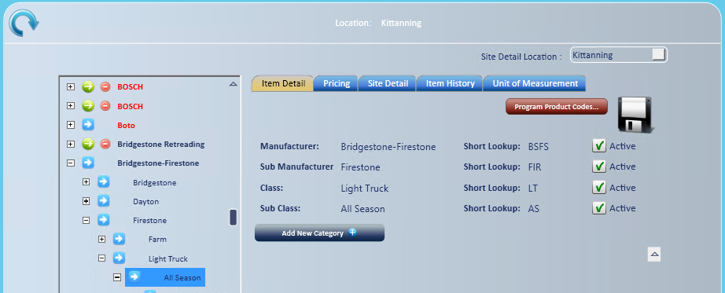
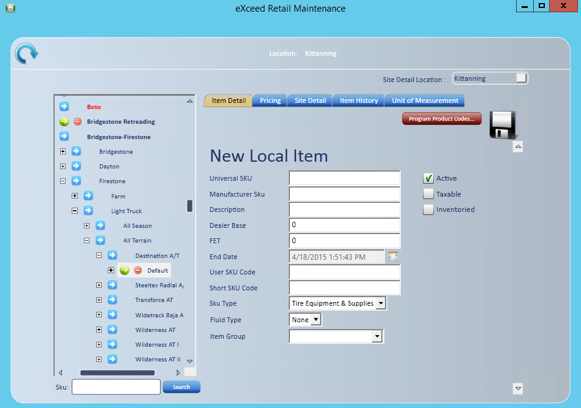

Inventory Management
Use Inventory Management to create and manage inventory items, define price levels and rule assignments, maintain cost and base value fields, manage tire fee states, view item detail from TDC (Tire Data Central), and keep any additional item information you want.
- Go to Manage; Inventory; Manage Inventory.
The inventory tree

The inventory tree has six levels for tires, parts, retreads, wheels, non-inventoried items and more. The shared tree structure keeps items consistent, which makes reporting more effective.
- TDC item: The item is housed in TDC (Tire Data Central).
- Local item: The item was created locally.
- Items in red: The item is inactive.
- Manufacturer: The manufacturer name, such as Michelin.
- Sub-Manufacturer: Groups several brands under one manufacturer, such as Michelin, BF Goodrich and Uniroyal.
- Class: The tire type, such as passenger, light truck or medium truck.
- Sub-Class: The tire type, such as all season, all terrain or touring.
- Category: The tire line, such as Ecopia, Destination AT or FR380.
- Sub-Category: Additional information about the tire line. This is typically set as Default.
Find an item
- Use the + and - symbols to open levels of the tree, or enter an item number to go straight to the item.
- Enter the item number and select Search SKU
 .
.
Item Detail tab
The Item Detail tab draws on a tire database of over 105,000 items for tire specifications, pictures, comparisons, features and warranty information. You can print this information or email it from the inventory search screen.
- User Sku Code: Enter the SKU code you want. This is generally the item number from your previous software.
- Item Group Selection: Select an item group from the Item Group dropdown. See Item Group Setup and Item Assignment.
- Program Product Codes: Assigns the program item number required for submission.
To add a program product code:

- Select Add New.
- Select the program from the Program dropdown.
- Enter the National Account product code.
- Select Done.
Note: To delete a line item, select .
Note: When you change Outside Purchase SKU, you are asked whether the change applies to all locations or this location only.
Inactivate an item
- Clear the Active check box.
- The item no longer displays in search results.

Pricing tab
Use the Pricing tab to set and maintain price rules within the price levels you created, based on any level of the inventory tree.
Create a price rule
- Select the branch where you want to set the rule. Use + to open levels.
- To set the rule on a single SKU, use the Search box to select it.
- Select Add Rule
 .
.
- The branch or item you selected displays in the Rule From column.
- A rule set at a branch affects all branches and items below that branch.
- The branch or item you selected displays in the Rule From column.
- Select the Price Level the rule applies to.
- Enter a Name based on the tree branch or SKU the rule was created for. This field is required.
- Select the Type.
- Select %, G% or $. The GP% formula is Base/(1.00-GP%).
- Select the Class.
- Cumulative: A chained rule.
- Additive: Works the same way as a cumulative rule.
- Fixed: Sets a fixed price that overrides price level rules.
- Margin Ceiling/Margin Floor
- Round Nearest: Rounds to the nearest value assigned.
- Round Up: Rounds up to the nearest value assigned.
- Base Change Rules: Changes the base factor for pricing or cost to something other than the default setting.
- Matrix: Sets pricing based on a range of price or a range of units.
- If you want Matrix pricing, enter Min Cost and Max Cost.
- Enter the Value for the type and class you selected. Negative values are allowed.
- Use the Move Up and Move Down icons to arrange the rule order. Price rules are chained.
- Select Save.
Remove a price rule
- Select the rule you want to delete.
- Select .
- Select Save .

Site Detail tab
The Site Detail tab shows quantities on hand, committed and ordered, along with last cost and average cost. You can also enter, edit or load the fields shown in white.
- Last Cost and Average Cost: Only users with the Item - Edit Last Cost and Item - Edit Average Cost access rights can edit these.
- Is Inventoried: Changes whether the item is inventoried at this store. After a SKU is saved, the Inventoried box on the Item Detail tab can't be changed.
- Base Value Fields (20): Editable, loadable fields you can use for a price level base, default pricing and more.
- True Cost, Invoice Cost, Calc Cost 1 and Calc Cost 2: Editable, loadable fields you can use for a price level base, for the default cost on invoices, purchase orders, adjustments and receipts, or both.
- Min/Max Reorder Points: Editable, loadable fields that set reorder requirements.
Tip: You can edit all stores from one screen by selecting the store in the Site Detail Location dropdown .
Other tabs
- User Defined: Provides 35 additional informational fields that you can title and fill in, for report use only. They include check box, character, integer and date fields. You might use them for data such as equivalencies if you use integrated routing software.
- Item History: Gives an overview of the item's history for the previous 12 months. By month, it shows total sales dollars, sales units, sales average dollars, GP average dollars, receipt dollars, receipt quantity, receipts average dollars and receipts % change dollars.
- Units of Measure: Sets additional units of measure and assigns them to multiple order types or modules. You can also define dimension and weight settings here.
- Core: Shows only if your company uses parts cores. Sets whether the item is a core or has a core.
- On Order: Lists outstanding purchase orders and inbound transfers for the item.
- Item Allocation: Lists the orders the item is allocated to, with Location, Type, Order #, Customer, Status and Qty Allocated.
- Item Movement: Lists the item's transactions for the Dates you pick, with Trans. Type, Trans #, Cost, Qty and Snapshot Qty.
Note: If you leave the window, move in the inventory tree, or pick another SKU while you have unsaved changes, you are asked to save, discard or cancel.
Add a branch or item
- Select the branch above where you want the new branch or item.
- Use + to open the tree to the branch you want.
- Select the arrow for what you want to add.
- The blue arrow adds a new branch. The green arrow adds a new item.
Add a branch

- Select the blue arrow.
- Select Add New Category .
- Enter the Category Name and Short Lookup.
- Select Save.
Add an item
Open the tree to the branch where the item belongs, as described above.

- Select the green arrow.
- Select Add New Sku .
- Enter the Universal Sku, which has three segments.
- The simple tire size, such as 2656016, with no symbols or letters.
- The 3-digit manufacturer SKU, such as MIC. This is generally three characters, with a few exceptions.
- The manufacturer item number.
- Enter the Manufacturer Sku.
- Enter a Description. Include as much detail as you can, because this field is searchable.
- Enter Dealer Base if you use it.
- Enter FET if the tire meets the criteria.
- Select an End Date from the calendar. We suggest using the same future date on all new SKUs.
- The End Date defines whether the product is discontinued. A discontinued item displays in red in inventory search.
- Enter User Sku if you use it.
- Enter the Short Sku Code.
- Select the Sku Type. This helps with reporting, shop fee setup and more.
- If the item is a fluid, select the Fluid Type.
- Select an Item Group from the dropdown if you use item groups.
- Review the check boxes. Active is checked by default unless you change it.
- Taxable, Inventoried and Tech Required are checked by default. Clear any that don't apply.
- You can change Inventoried on this screen only while the SKU is new. After you save it, change it on the Site Detail tab.
- Select Save .
Note: Always fill in the Site Detail tab when you create or load new items, and check whether the item also needs pricing setup. See Site Detail tab and Pricing tab above. A tire SKU can't be saved until its required tire fields are filled in. A message tells you what is missing.
Set up SKU types
Use SKU types to classify items for reporting, shop fee setup and more.
- Go to Manage; Company Setup; Sku Types.
- Select Add, and then enter the Description and Line Item Type.
- You can set the Description and Line Item Type only while the SKU type is new.
- To let users edit the description of items of this SKU type on a Service Request, check Allow User to Edit the Item Description on Service Requests (for California BAR compliance).
- Users with the Service Request - Item Description access right can edit any item description, whatever the SKU type setting.
- Select Save.